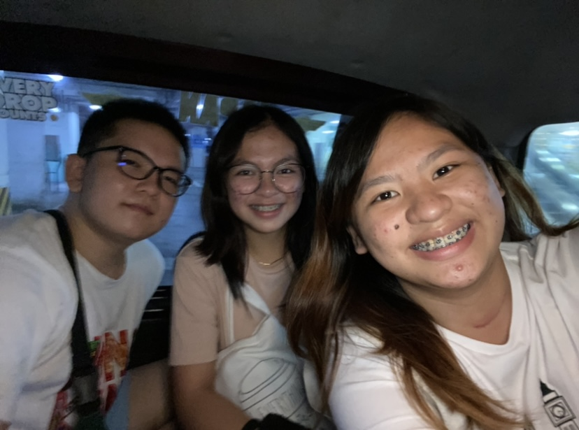

Introduction
Allow me to introduce you to Ate Pam, a remarkable individual and my beloved cousin residing in the vibrant city of Malabon. Despite facing the challenges of throat cancer, Ate Pam continues to exemplify resilience and positivity. Currently engaged in her professional pursuits, she not only confronts life's adversities with courage but also maintains an unwavering cheerful personality that brightens the lives of those around her.
Achievements
Despite the challenges she faces, Ate Pam has achieved notable milestones in her personal and professional life. Her dedication to her work and her determination to overcome obstacles serve as an inspiration to all who know her. Ate Pam's resilience shines through in every accomplishment, making her a source of pride for our family and a role model for others.
Qualities
Ate Pam's cheerful personality is contagious, creating a positive atmosphere wherever she goes. Her kindness and generosity know no bounds, and she is always ready to lend a helping hand to those in need. Her unwavering optimism in the face of adversity illuminates the lives of everyone around her, making her a beacon of hope and strength.
Impact
Ate Pam's impact extends beyond her immediate circle. Her willingness to help others, coupled with her infectious positivity, has touched the hearts of many. She has become a source of inspiration for those facing their own challenges. Through her journey, Ate Pam has not only demonstrated resilience but also the transformative power of a positive attitude.
- Love
- Kindness
- Openness
Conclusion
In conclusion, this tribute is a celebration of Ate Pam's indomitable spirit, her achievements, and the positive influence she has had on everyone fortunate enough to know her. Ate Pam's journey is a testament to the strength of the human spirit and the ability to find joy and purpose even in the face of adversity. As we honor Ate Pam, let us be reminded of the enduring power of optimism, compassion, and the profound impact one individual can have on the lives of others.